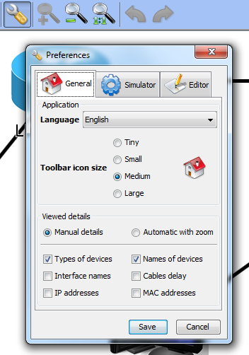
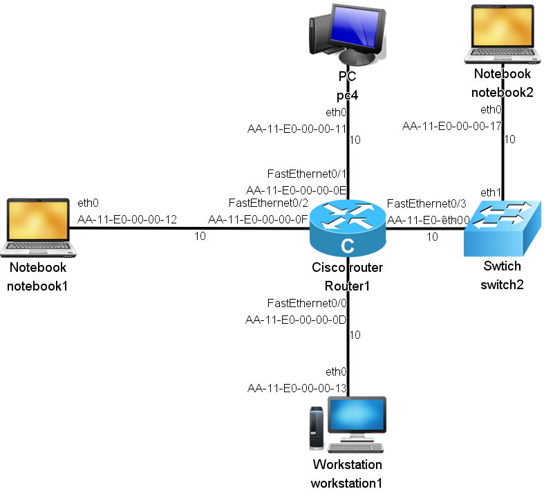
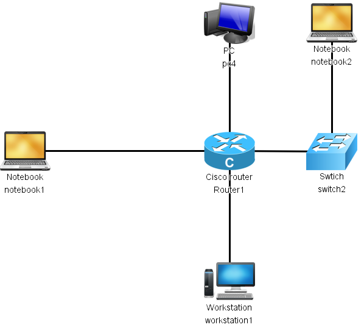

Settings of displayed details are in the Preferences window
Using manual details you can choose the details you want to display. You can choose from:
Network with all possible details looks like this:
The level of details can be set to Automatic with zoom. In this setting the level of details depends on current zoom. After a small zoom-out some details dissapear, as shown on next picture:
Next part of this tutorial is: Saving the project.